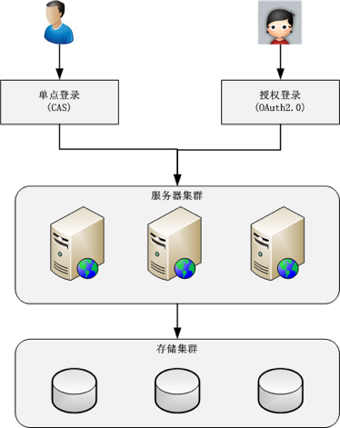

用户层
用户管理
互联网业务的一个典型特征是通过互联网将众多分散的用户连接起来。
单点登录（SSO）（统一登录）
单点登录成熟开源方案CAS架构如下

授权登录
业务做成平台后，需要允许第三方应用接入，这就需要授权登录。
流行协议：OAuth 2.0协议
用户管理基本架构

消息推送
短信、邮件、站内信、App推送。
一般都有对应的第三方接入api。
对于敏感数据，可能需要自己实现消息推送
实现消息推送
- 海量设备和用户管理
将用户和设备关联起来，需要提取用户特征对用户进行分类或者打标签等。 - 连接保活
要想推送消息必须有连接通道，但大部分设备为了省电省流量等原因会限制应用后台运行，这可能会导致连接通道被中断，导致消息无法及时送达。
连接保活是整个消息推送里面设计中细节和黑科技最多的地方（例如应用互相拉起、找手机厂商开白名单等）。 - 消息管理
不是每个消息都需要发送给每个用户，而是根据用户的特征，宣和一些用户进行消息推送。
可以采用规则引擎之类的微内核架构的技术。
存储云、图片云
互联网业务场景中，用户会上传多种类型的文件数据（如微信朋友圈图片，微博视频图片等）
特点
- 数量大：用户基数大，用户上传频繁
- 文件体积小：大部分是几百KB到几MB
- 访问有效性：大部分是刚上传的时候访问最多，随着时间的推移访问量越来越小